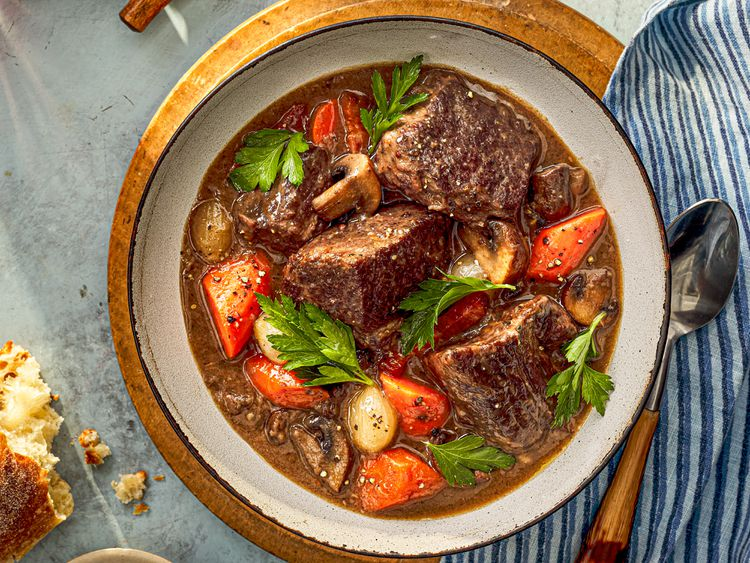

Bœuf Bourguignon

Description
A French beef stew braised in red wine, often red Burgundy,
and beef stock, typically flavored with carrots, onions, garlic,
and a bouquet garni, and garnished with pearl onions, mushrooms,
and bacon.
Ingredients
-
2 cups (500ml) homemade chicken stock or store-bought
low-sodium broth
-
4 packets unflavored powdered gelatin
(3 tablespoons plus 1 teaspoon; 30g)
- 2 tablespoons (30ml) vegetable oil, plus more as needed
-
3 pounds (1.25kg) whole boneless beef chuck roast,
cut crosswise into 3 steaks
-
4 teaspoons (12g) Diamond Crystal kosher salt, divided;
for table salt, use half as much by volume or the same weight
- 1 teaspoon freshly ground black pepper
-
1 1/4 pounds carrots (600g; about 3 large),
1/2 pound (250g) peeled and split lengthwise,
3/4 pound (350g) cut into large dice (about 1 1/2 cups)
-
1 medium yellow onion (8 ounces; ; 227g),
peeled and split in half through the root
- 4 medium cloves garlic, lightly crushed
- 1/4 cup (60ml) cognac or brandy (optional)
- 3 cups (750ml) dry red wine
- 1 tablespoon (15ml) fish sauce
- 1 tablespoon (15ml) soy sauce
-
1 bouquet garni (about 4 sprigs thyme, 3 sprigs parsley,
and 1 bay leaf, tied together with kitchen twine)
- 5 tablespoons all-purpose flour (1.4 ounces; 40g)
-
1/4 pound (110g) slab bacon or salt pork, cut into
1-inch-long by 1/4-inch-thick sticks (about 1 cup)
-
1 pound cremini mushrooms (450g), woody stems trimmed if
necessary and caps quartered
- 8 ounces white and/or red pearl onions (225g), peeled
- Minced flat-leaf parsley leaves and tender stems, for garnish
Directions
-
Preheat oven to 325°F (160°C). Pour chicken stock into a
medium bowl and sprinkle gelatin evenly all over surface,
allowing each packet's worth of gelatin to soak up stock
before sprinkling next one on. Set aside.
-
In a large Dutch oven, heat oil over medium-high heat until
shimmering. Season beef all over with 3 teaspoons of salt and
1 teaspoon of pepper and add to Dutch oven. Cook, turning
occasionally, until beef is well browned on 2 sides, about 10
minutes. Transfer beef to a rimmed baking sheet.
-
Lower heat to medium; add split carrots, halved onion, and
garlic to Dutch oven and cook, turning occasionally, until
lightly browned, about 4 minutes.
-
Add brandy, if using, and boil until alcohol has nearly cooked
off, about 2 minutes. (If not using brandy, proceed with next
step.)
-
Scrape chicken stock and gelatin mixture into Dutch oven. Add
red wine, fish sauce, soy sauce, and bouquet garni and bring to
a simmer over medium high, then lower heat to medium to maintain
simmer. Meanwhile, cut beef into 2-inch chunks and transfer to a
large mixing bowl. Add flour and stir until beef is evenly coated
in a floury paste. Add beef and any accumulated juices to Dutch
oven. Bring back to a simmer then transfer to oven, partially
cover with a lid, and cook until beef starts to become tender,
about 2 hours.
-
Meanwhile, in a large nonstick skillet, cook bacon lardons over
medium-high heat, stirring occasionally, until fat has rendered
and lardons are lightly browned and crisp, 4 to 6 minutes. Using
a slotted spoon, transfer lardons to a plate.
-
Add mushrooms to skillet and cook over medium-high heat, stirring
occasionally, until mushrooms have released their liquid and
browned, about 10 minutes; add oil as needed if pan becomes too
dry. Add diced carrots and pearl onions and continue to cook,
stirring occasionally, until lightly browned, about 5 minutes.
-
Remove stew from oven. Using tongs, fish out and discard large
pieces of carrot and onion. Discard bouquet garni. Using a ladle,
skim off and discard accumulated fat on surface. Add reserved
lardons and sautéed carrots, onions, and mushrooms to stew,
return to oven, and continue to cook, uncovered, until beef is
fork tender, pearl onions are soft but still hold their shape,
and sauce is nappe, about 1 hour.
-
Remove stew from oven. If serving right away, skim off any
additional fat from surface. Season to taste with salt and pepper.
Allow to cool slightly before serving, then serve topped with
parsley. If making ahead, cool down stew, then chill in
refrigerator; remove solid fat cap from surface once fully
chilled. Reheat stew on the stovetop or in a low oven.